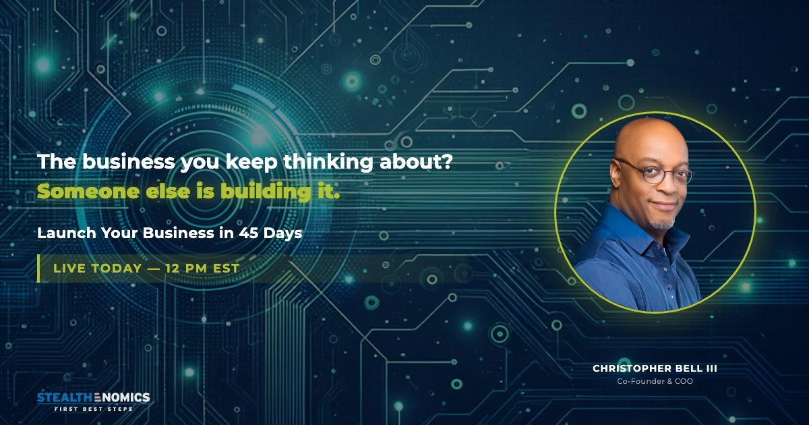

What changed in Meta ads
Meta now uses an AI retrieval system, called Andromeda, to choose which ads each person could see before the auction even starts. It works best with a simple account and a wide, varied pool of creative to match against each person.
Many small campaigns, tight interest targeting, two or three winning ads pushed until they burn out, and success judged by whatever Ads Manager attributes to the last click.
A few campaigns with the budget pooled, broad audiences, several genuinely different ads per campaign, a pixel that reports the real conversion with good match quality, and results judged on what the business sells.
Results
Every account is judged on what happens after the click: a registration, a lead the team can call, a purchase.
R$2,238 in ads, R$5,212 in sales in one week
A purchase campaign with video and static creative, tracked from the visit to the checkout to the sale. The creative table shows which ad actually sells: the second video brought 16 of the 25 purchases at the lowest cost.
 Live dashboard, week of Jul 23, 2025
Live dashboard, week of Jul 23, 2025
59 leads in three weeks at $6.45 each
One ad per type of case (divorce, visa urgency, status adjustment, approved I-140), each sending people straight into a message with the firm. The attorney sees the weekly cost per lead by ad, so she knows which case type the budget is buying.


Ad costs rose 85% in a month. The creative kept a lead at about $7.
A lead campaign on Meta's instant form with four ads, each doing a different job. In October the cost per thousand impressions went from $36 to $67. The ads answered with a click rate that climbed from 7.7% to 11.8%, so the cost per lead only moved from $6.42 to $7.02. On flat creative it would have been about $12, and the account's August campaign had paid $25.77.
The form asks when the person plans to start, so whoever calls the leads begins with the ready ones. The objection ad ("you don't need a lot of money") turned 38% of its clicks into leads at $6.14.


Three years in one account: 2,004 conversations started on WhatsApp
Separate campaigns for New York and Massachusetts so the two markets can be compared, retargeting for people who engaged without writing, and lead form tests side by side with message campaigns, where a lead cost about twice as much as a conversation.


Switched off the campaign that looked busy and rebuilt the one that converts
A Traffic campaign had spent $451 for 1,603 landing page views and zero tracked registrations. I stopped it, rebuilt the webinar campaign on Meta's conversion objective with the registration as the event, and moved the email list to the front of the invite plan.


The webinar adThe system, in seven steps
The same order on every account. The first two steps usually find money before anything new is launched.
What each campaign really produced, which events fire, and what is double counted.
Pixel events for the real conversion, with the value when there is a sale, and match quality checked.
Five ads with different jobs, so the system has real variety to match against each person.
Few campaigns, budget pooled at campaign level, broad audiences, so each campaign leaves the learning phase.
Split by region or audience to see the sales the ads create, not just the ones they take credit for.
Cost per lead, cost per purchase and revenue by ad, on a dashboard that updates on its own.
Ideas scored on a growth board, one test at a time with its win condition set first, and a weekly read of what changed.
The five-ad creative set
Five ads that do different jobs instead of five versions of the same ad. The top three find new people, the bottom two bring back the ones who looked and did not act.
How I test and improve
Every account runs on a growth board: the funnel read step by step, every idea scored before anyone builds it, and each test written down with its win condition before it starts. Nothing changes because it felt right that week.
Find the widest gap
The funnel is measured at each step, from the ad to the payment. The step that loses the most people gets the next test, not the step that is easiest to change.
Score every idea
Each idea gets 0 to 10 on cost, odds of working and impact. The average sets the order, so the next test is chosen by its score and the owner of each step is named.
Decide the win first
Every test starts with a baseline, one metric and the result that counts as a win, then dated readings until it is called. When a step cannot be measured, the first test is the measurement.
| Idea, from a real board | Score | What happened |
|---|---|---|
| Name the price on the form's thank-you screen The screen promised free training, the page asked for money. | 7.3 | shipped Cost per lead fell from $7.63 to $7.05 on the new form. |
| Put the buy button above the 5-minute video Four in five visitors never press play, and the button sat under the player. | 7.7 | under test Baseline: 10% of visits click buy. |
| Move the qualifying question behind the contact fields 109 of 141 people left the form at that question. | 7.7 | retired Meta always shows custom questions first. The idea became a new one: drop the question (8.0). |
| Show the price on day 2 of the emails, not day 12 An $8.99 subscription is an impulse decision. | 7.0 | waiting on approval Changes a sequence the client signed off. |
Dashboards and reports instead of screenshots
Every client gets a live dashboard that pulls from Meta on its own: spend, the funnel from click to sale, and each ad's cost per result. A short written note each week says what changed and what to do next.


How we start
Audit, in 3 working days
I go through your account and tracking and send a written plan: what to stop, what to fix in the signal, and the first creative set to brief.
Rebuild and launch
Simplified structure, the five-ad set, and the dashboard connected to your account in the first two weeks.
Weekly read
One short note a week with the numbers, what changed and what comes next. No status calls needed.